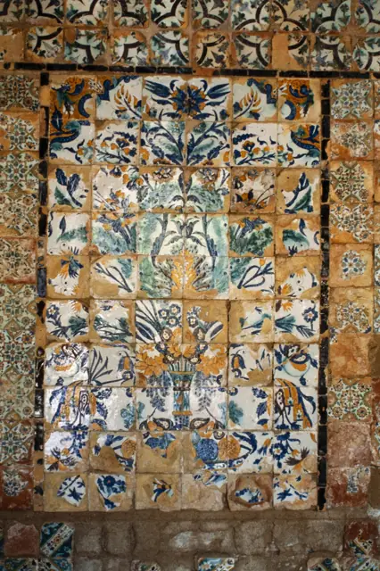
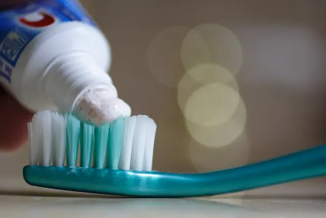

Cabinet dentaire · Nabeul
Dr Yasmine Damergi
Médecin dentiste à Nabeul, la ville de la céramique. Cabinet ouvert en janvier 2024, consultations sur rendez-vous.

Céramique tunisienne · illustrationParcours
Repères
- Décembre 2023Diplôme de médecin dentiste.
- Janvier 2024Ouverture du cabinet à Nabeul.
- Aujourd'huiConsultations sur rendez-vous, par téléphone ou WhatsApp.
Le cabinet
QualificationMédecin dentiste
AdresseNabeul (adresse exacte à confirmer)
Contact+216 24 286 222 · drdamergiyasmine@gmail.com
N° d'Ordre · Langues · CNAMà confirmer · à confirmer · à confirmer
Horaires
La semaine au cabinet
Lundià confirmer
Mardià confirmer
Mercredijusqu'à 17h00
Jeudià confirmer
Vendredià confirmer
Samedià confirmer
Dimancheà confirmer
Horaire relevé sur la fiche Google le 30/09/2026. Autres jours et horaires complets à confirmer avec l'établissement.
Rendez-vous
Écrire au cabinet
Remplissez le formulaire : il ouvre WhatsApp avec votre demande pour le +216 24 286 222. Le cabinet vous confirme l'heure.
